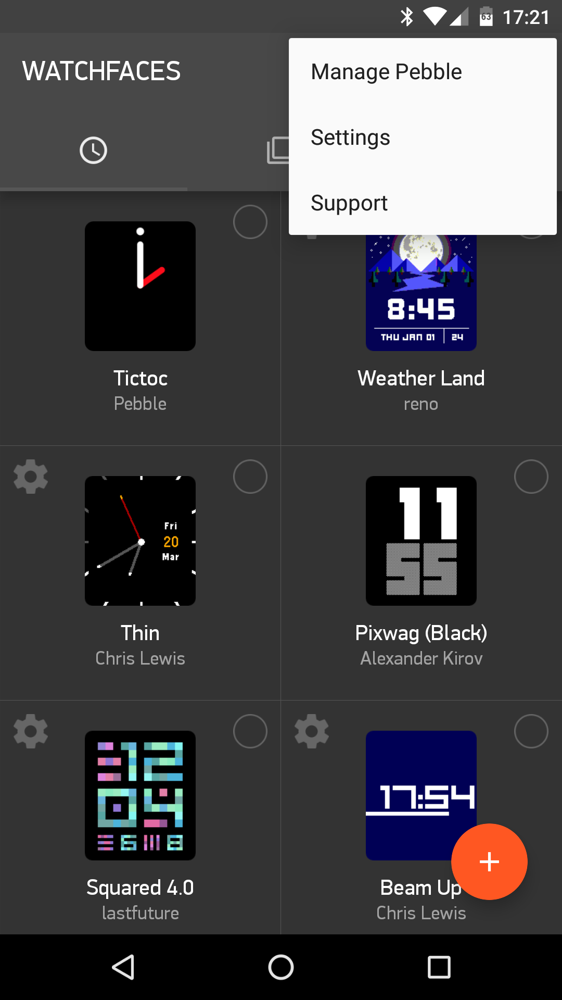
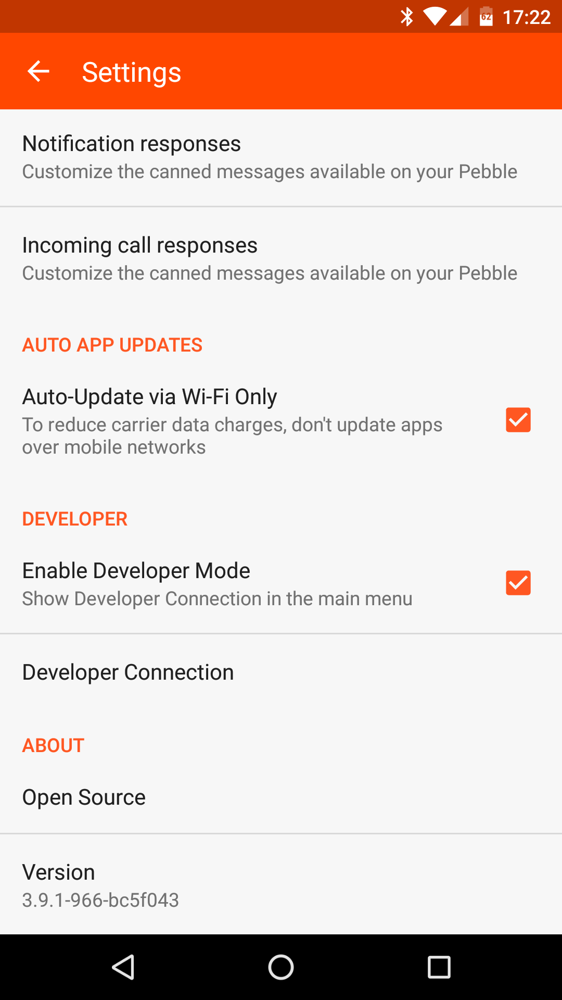
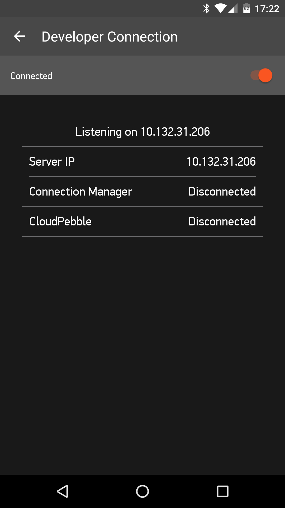
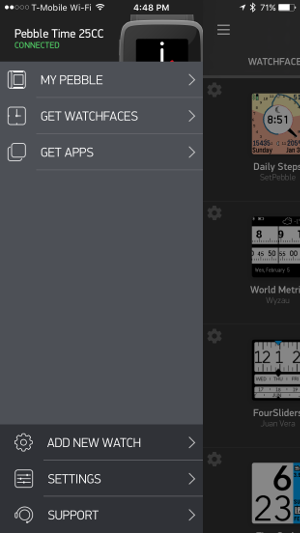
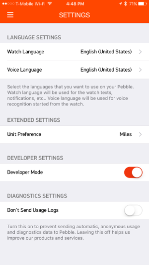
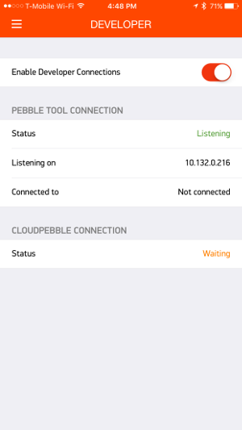

In order to install apps from the local SDK using the pebble tool or from
CloudPebble, the Pebble Android or iOS app must
be set up to allow a connection from the computer to the watch. This enables
viewing logs and installing apps directly from the development environment,
speeding up development.
Follow the steps illustrated below to get started.
In the Pebble mobile app:



pebble tool, make note of the 'Server IP'. If using
CloudPebble, this will be handled automatically.In the Pebble mobile app:



pebble tool, make note of the phone's 'Listening on' IP
address. If using CloudPebble, this will be handled automatically.